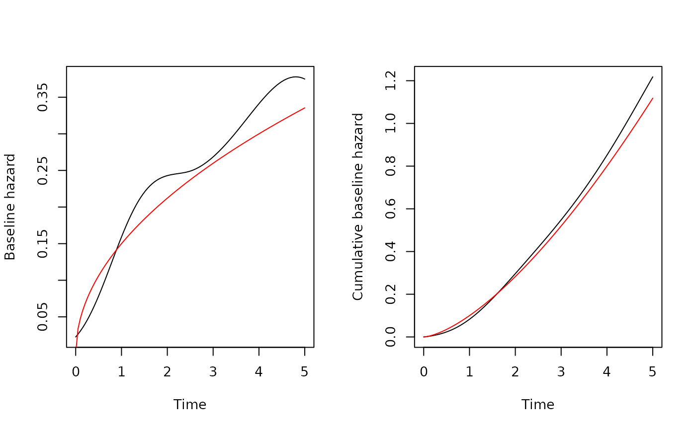

Fit Survial Models via Ordinary Differential Equations
Arguments
- formula
a formula object, with the response on the left of a
~operator, and the terms on the right. The response must be a survival object as returned by theSurvfunction.- data
a data frame in which to interpret the variables named in the
formula.- df
the number of degrees of freedom for the spline.
- degree
the degree of the spline. Default is 3.
- knots
the knots of the spline, either
"uniform"or"quantile". For"uniform", the knots are equally spaced between 0 and the maximum observed time. For"quantile", the knots are equally spaced between the quantiles of the observed times. Default is"uniform".- init
a vector of initial values for the parameters. Default initial value is zero for all parameters.
- control
Object of class survode_control containing control parameters for the fitting algorithm. Default is
survode_control(...).- ...
Other arguments passed to
survode_control.
Examples
library(simsurv)
library(survode)
# Create a simple data set
set.seed(42)
cov <- data.frame(
id = 1:400,
trt = stats::rbinom(400, 1L, 0.5),
hormon = stats::rnorm(400, 0, 1)
)
dat <- simsurv(
lambdas = 0.1, gammas = 1.5, betas = c(trt = -0.5, hormon = 1.0),
x = cov, maxt = 5
)
sim <- merge(cov, dat)
# Fit a Cox model with a spline for the baseline hazard
fit <- survode(Surv(eventtime, status) ~ trt + hormon, data = sim, df = 5)
fit$coefficients$beta
#> trt hormon
#> -0.6693948 0.9394916
# Predict the baseline hazard at times (0, 5)
bh <- predict(fit, type = "hazard", time = seq(0, 5, length.out = 100))
par(mfrow = c(1, 2), cex = 0.85)
plot(
bh$time, bh$basehaz,
type = "l", xlab = "Time", ylab = "Baseline hazard"
)
lines(bh$time, 0.15 * bh$time^0.5, col = "red")
plot(
bh$time, bh$cumhaz,
type = "l", xlab = "Time", ylab = "Cumulative baseline hazard"
)
lines(bh$time, 0.1 * bh$time^1.5, col = "red")
